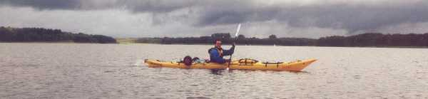

| Home | Kontakt | Steckbrief |
| Wandern/Trekking |
| Klettern/Klettersteige |
| Kanu |
| Fahrradtouren |
|
| Rucksack-Reisen |
| Touren mit Kindern |
| Wissenswertes |
Paddeln auf der Mecklenburger SeenplatteDa es zur Hauptsaison an der Mecklenburger Seenplatte mittlerweile recht voll ist, haben wir uns entschieden eine Paddeltour Ende September zu versuchen. Das Risiko schlechtes Wetter zu haben war und bewußt und hat uns auch erwischt. Elmar hat eine 65km Rundtour ausgearbeitet, die am Campingplatz von Biber-Tours startet.Die geplante Rundtour 25.09.04Ich packte meinen Klepper Aerius auf den zur einer Art Sackkarre umbaubaren Kanuwagen von Eckla und den Rest der Ausrüstung für eine Woche in einen Rucksack und begab mich als wandernder Schwertransport zum Duisburger Hauptbahnhof. Wunderbarerweise gibt es einen Stadtexpress, der mich ohne Umstieg bis nach Rheda-Wiedenbrück brachte, wo Elmar bereits am Bahnhof auf mich wartete. Nach dem gemeinsamen Lebensmitteleinkauf bei Feinkost Aldi luden wir Elmars Prijon aufs Autodach und fuhren nach Nordosten zum Campingplatz von Biber-Tours am Labussee nahe der Diemitzer Schleuse. Dort haben wir dann erst mal das Zelt aufgebaut und die Boote für den nächsten Tag fahrbereit gemacht.Unterwegs im schwimmenden Zelt (Klepper Aerius)  Elmar in seinem Joghurtbecher 26.09.04Es ging vom Campingplatz am Labussee Richtung Osten nach Canow, wo wir auf die erste Schleuse trafen. Vom Canower See ging es über den kleinen Palitzsee und den großen Palitzsee nach Strasen. Dort gab es die zweite Schleuse. Es ging weiter via Ellbogensee und an Priepert vorbei nach Norden. Dann über den großen Priepertsee und am Wagnitzsee vorbei nach Ahrensberg. Dann kurz in den Drewensee und zum Campingplatz C10. Der schöne, leere Campingplatz C10 27.09.04Der Tag startete mit Nieselregen aber nach dem Frühstück wurde es etwas trockener. Wir paddelten vom Drewensee nach Nordosten durch die Obere Havel-Wasserstraße zur Schleuse Wesenberg. Dort mussten wir die Boote umtragen, da der Schleusenwärter keine Lust hatte nur für uns zu schleusen. In Wesenberg haben wir kurz angelegt und den Ort inklusive Supermarkt besichtigt.Anlegestelle in Wesenberg Der an Wesenberg angrenzende Woblitzssee kann bei Wind recht gefährlich werden. Wir hatten aber Glück und hatten nur leichten Seitenwind, so dass sich keine hohen Wellen aufbauen konnten. Nach dem Woblitzsee ging es nach Westen in den Großen Labussee und durch die Schleuse Zwenzow, die nur um 08:00Uhr, 12:00Uhr und 16:00 in Betrieb ist. Zu den übrigen Zeiten muß umgetragen werden. Wir hatten Glück und schafften die 16 Uhr Schleusung. Am Useriner See übernachteten wir auf dem Campingplatz. 28.09.04Am morgen ging es über den Useriner See Richtung Norden und dann nach Westen in den Zierzsee und durch den Görtowsee an Blankenförde vorbei. Dort befindet man sich in der Kernzone des Müritz Nationalparks. Als Kanufahrer darf man die Seen nur in der Nähe der Bojen durchfahren, um die zahlreichen Vögel nicht zu stören. Tatsächlich gelang es uns auf diesem Stück mehrere Eisvögel zu beobachten.Die Havel bei Blankenförde Weiter ging es auf der Havel durch den Jäthensee bis zu einer Straßenbrücke bei Babke. Dort verluden wir die Boote auf unsere Kanuwagen und es ging ca. 5km über Land bis in den Woterfitzsee. Von dort paddelten wir in den Leppinsee wo wir am Ostufer auf einem Campingplatz. 29.09.04Vom Leppinsee ging es Richtung Süden vorbei an Granzow und Mirow in die Müritz Havel-Wasserstraße. Durch den Zotzensee, M&oouml;ssensee, Vilzsee und die Diemitzer Schleuse zurück zu unserem Campingplatz von Biber Tours. Während des ganzen Tages regnete es und der Wind kam natürlich auch konstant von vorne.Tipps und Informationen: - Es gibt in der Region genügend Campingplätze und es nicht notwendig, wild zu übernachten. - Die Campingplätze kosten für zwei Personen mit Zelt etwa 10 bis 15 Euro. - Das Auto kann man am Campingplatz von Biber Tours gegen Gebühr stehen lassen. - An den Schleusen findet man häufig Bootsschleppen. |